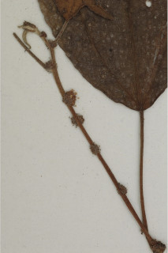
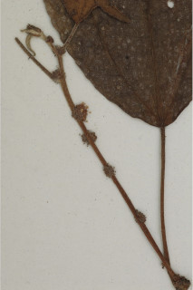

Large shrubs or small trees ca. 4 m tall.
ದೊಡ್ಡ ಗಾತ್ರದ ಪೊದೆಗಳು ಅಥವಾ ಅಂದಾಜು 4 ಮೀ. ಎತ್ತರದವರೆಗಿನ ಮರಗಳು.
Large shrubs or small trees ca. 4 m tall.
பெரிய குத்துச்செடி அல்லது சிறிய மரம் 4 மீ. உயரம் வரை வளரக்கூடியது.
Bark greyish brown, smooth.
ತೊಗಟೆ ಬೂದು ಮಿಶ್ರಿತ ಕಂದು ಬಣ್ಣದಲ್ಲಿದ್ದು,ನಯವಾಗಿರುತ್ತದೆ .
Bark greyish brown, smooth.
மரத்தின் பட்டை சாம்பல்-ப்ரவுன் நிறமானது , வழுவழுப்பானது.
Branchlets subterete, tomentose.
ಕಿರುಕೊಂಬೆಗಳು ಉಪದುಂಡಾಗಿದ್ದು,ದಟ್ಟ ಮೃದುತುಪ್ಪಳದಿಂದ ಕೂಡಿರುತ್ತವೆ.
Branchlets subterete, tomentose.
சிறியநுனிக்கிளைகள் குறுக்குவெட்டுத் தோற்றத்தில் கிட்டதட்ட வளையமானது, உரோமங்களுடையது.
Leaves simple, alternate, spiral; stipule caducous and leaving scar; petiole up to 9.5 cm long, terete, tomentose; lamina 8-16 x 3.5-6 cm, ovate - lanceolate, apex acuminate, base rounded, margin crenate-serrate, tomentose beneath, with glandular stinging hairs; 3-nerved at base; secondary_nerves ca. 4 pairs; tertiary_nerves horizontally percurrent.
ಎಲೆಗಳು ಸರಳವಾಗಿದ್ದು ಪರ್ಯಾಯ ಮತ್ತು ಸುತ್ತು ಜೋಡನಾ ವ್ಯವಸ್ಥೆಯಲ್ಲಿರುತ್ತವೆ;ಕಾವಿನೆಲೆಗಳು ಉದುರುವ ಮಾದರಿಯಲ್ಲಿದ್ದು ಉದುರಿ ಹೋದ ನಂತರ ಗುರುತುಗಳನ್ನು ಉಳಿಸುತ್ತವೆ;ತೊಟ್ಟುಗಳು 9.5 ಮೀ.ವರೆಗಿನ ಉದ್ದವಿದ್ದು,ದುಂಡಾಗಿರುತ್ತವೆ,ದಟ್ಟ ಮೃದುತುಪ್ಪಳದಿಂದ ಕೂಡಿರುತ್ತವೆ ;ಪತ್ರಗಳು 8–16 X 3.5 - 6 ಸೆಂ.ಮೀ. ಗಾತ್ರ, ಅಂಡ - ಭರ್ಜಿಯ ಆಕಾರ ಹೊಂದಿದ್ದು, ಕ್ರಮೇಣ ಚೂಪಾಗುವವರೆಗಿನ ತುದಿ, ದುಂಡಾದ ಬುಡ,ದುಂಡೇಣು -ಗರಗಸ ದಂತಿತ ಅಂಚು ಹೊಂದಿದ್ದು, ತಳ ಭಾಗದಲ್ಲಿ ದಟ್ಟ ಮೃದುತುಪ್ಪಳದಿಂದ ಕೂಡಿರುತ್ತದೆ ; ಪತ್ರಗಳ ಬುಡದಲ್ಲಿ 3 ನಾಳಗಳಿರುತ್ತವೆ; ಎರಡನೇ ದರ್ಜೆಯ ನಾಳಗಳು ಅಂದಾಜು 4 ಜೋಡಿಗಳಿರುತ್ತವೆ; ಮೂರನೇ ದರ್ಜೆಯ ನಾಳಗಳು ಲಂಬ ರೇಖೆಗೆ ಸಮಕೋನದಲ್ಲಿದ್ದು ಎಲೆಯ ದಿಂಡಿಗೆ ಅಡ್ಡವಾಗಿ ಕೂಡುವ ಮಾದರಿಯಲ್ಲಿರುತ್ತವೆ.
Leaves simple, alternate, spiral; stipule caducous and leaving scar; petiole up to 9.5 cm long, terete, tomentose; lamina 8-16 x 3.5-6 cm, ovate - lanceolate, apex acuminate, base rounded, margin crenate-serrate, tomentose beneath, with glandular stinging hairs; 3-nerved at base; secondary_nerves ca. 4 pairs; tertiary_nerves horizontally percurrent.
இலைகள் தனித்தவை, மாற்றுஅடுக்கமானவை, சுழல் போன்று அமைந்தவை; இலையடிச்செதில் எளிதில் உதிரக்கூடியது மற்றும் தழும்புகளை ஏற்படுத்துகின்றன; இலைக்காம்பு 9.5 செ.மீ. நீளமானது, குறுக்குவெட்டுத் தோற்றத்தில் வளையமானது, உரோமங்களுடையது; இலை அலகு 8-16 X 3.5-6 செ.மீ., முட்டை-ஈட்டி வடிவானது, அலகின் நுனி அதிக்கூரியது, அலகின் தளம் வட்டமானது, அலகின் விளிம்பு பிறை போன்ற பற்களுடையது-ரம்ப பற்களுடையது, அலகின் கீழ்பரப்பு உரோமங்களுடையது தளத்திலே 3 நரம்புகளை உடையது; இரண்டாம் நிலை நரம்புகள் 4 ஜோடிகள்; மூன்றாம் நிலை நரம்புகள் விளிம்பு நோக்கிய இணையான பெர்க்கரண்ட்..
Flowers in axillary fascicles.
ಹೂಗಳು ಅಕ್ಷಾಕಂಕುಳಿನಲ್ಲಿನ ಗುಚ್ಛಗಳಲ್ಲಿರುತ್ತವೆ.
Flowers in axillary fascicles.
மலர்கள் இலைக்கோணங்களில் தொகுப்பாக காணப்படுபவை.
 
